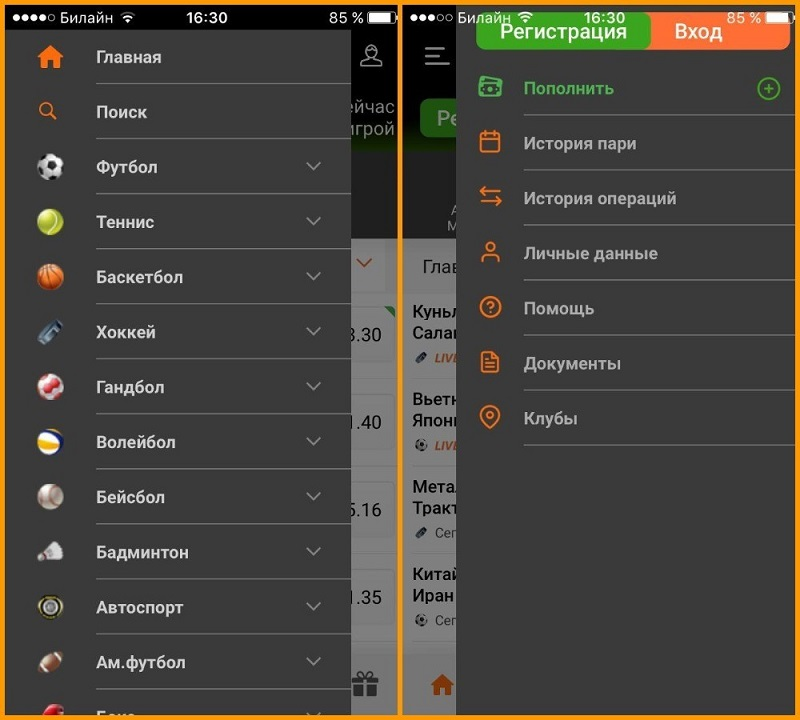

Каким функционалом обладает программа
Стоит загрузить Winline на свой телефон, чтобы вы могли:
- Ставки можно делать как в режиме прематч, так и в режиме live онлайн. Ставки в мобильном приложении будут такими же, как и на официальном сайте.
- Следите за видеотрансляциями матчей. Для этого букмекер предлагает более ста видеороликов в день.
- Вносить депозиты и снимать средства. Игроки также могут использовать другие возможности личного кабинета.
- Зарегистрируйтесь и войдите в систему через мобильное приложение - просто заполните соответствующую форму.
- Заявляйте о своих бонусах и успешно пользуйтесь программой лояльности.
Наконец, вы всегда можете обратиться в службу технической поддержки, которая доступна на русском языке.

Как обновить программу
Опять же, все обновления осуществляются через App Store. Для этого зайдите в магазин, найдите приложение в загрузках и нажмите на кнопку "Обновить" рядом с ним. После этого приложение обновится
Что делать, если программа вылетает или попросту не устанавливается
Это также может произойти. В этих случаях проверьте, не было ли обновлено приложение. Если была выпущена новая версия, вам нужно будет переустановить приложение. Если на вашем устройстве закончилась память, приложение также может не загрузиться. В этом случае необходимо очистить место, а затем попытаться загрузить приложение снова.
Достоинства и недостатки мобильного приложения
Благодаря мобильному приложению можно делать те же ставки, что и на официальном сайте. Это означает, что бетторы могут делать ставки до начала матча и на месте. В то же время, мобильное приложение - это возможность всегда быть в игре. Ставки можно делать не только дома, сидя перед компьютером, но и на прогулках, в магазинах, среди клиентов или даже на работе. Если вдруг официальный сайт находится на техническом обслуживании и доступ к нему закрыт, вы можете воспользоваться мобильным приложением. Мобильное приложение никак не ограничивает внесение и снятие средств. Это означает, что вы можете делать вклады и снимать деньги, и нет никаких ограничений на сумму денег, которую вы можете иметь на своем счету. Это также сэкономит вам много интернет-трафика.
Конечно, у нее есть свои недостатки, но они не очевидны - например, схема доступна только совершеннолетним гражданам России. Кроме того, отсутствует онлайн-чат, через который можно связаться с технической поддержкой. Также есть проблемы с поисковой строкой - невозможно найти нужное событие с помощью поисковой системы.